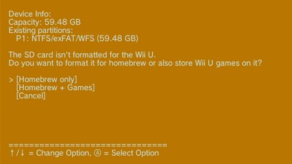
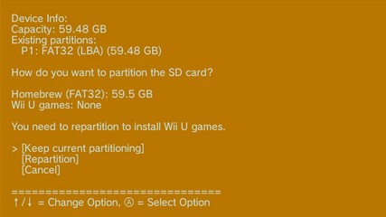
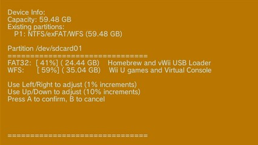
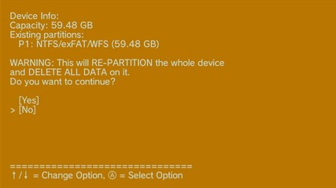

Formateo de SD o USB
En esta sección te puede apacer una de dos posibles pantallas dependiendo si la tarjeta SD o el dispositivo USB tiene o no una partición en formato MBR + FAT32.
Ten en cuenta que existen dos tipos de almacenamiento para la Wii U:
- FAT32 para *archivos homebrew*, es decir para los archivos de la modificación y aplicaciones "hechas en casa" (aplicaciones homebrew), además de *mods* para juegos de Wii U, juegos de Wii en formato WBFS, juegos de GameCube en formato ISO y ROMs de consolas retro.
- WFS para *juegos de Wii U*, es decir para los propios juegos de la consola, actualizaciones de esos juegos, contenido descargable adicional (DLC) y los archivos de guardado de los juegos.
Dispositivo sin partición FAT32
Condición: Se muestra cuando se detecta físicamente una tarjeta SD o un dispositivo USB, pero no se encuentra en formato MBR + FAT32 o aún no contiene la carpeta
wiiu.Pantalla:

The SD / USB device isn't formatted for the Wii U. Do you want to format it for homebrew or also store Wii U games on it? [Homebrew only] [Homebrew + Games] [Cancel]
Aquí tienes la opción de formatear todo el dispositivo en FAT32 para usarlo únicamente para *archivos homebrew*, o bien dividirlo en dos particiones: una en FAT32 para *archivos homebrew* y otra en WFS para los *juegos de Wii U*. Independientemente de cuál de las dos opciones elijas se borrarán todos los datos almacenados en el dispositivo.
Selecciona la opción [Homebrew only] si quieres que todo el almacenamiento de la tarjeta SD o del dispositivo USB sea para los *archivos homebrew*.
Selecciona la opción [Homebrew + Games] si quieres dividir el almacenamiento de la tarjeta SD o del dispositivo USB, una parte para los *archivos homebrew* y otra parte para los *juegos de Wii U*.
Dispositivo con partición FAT32
Condición: Se muestra cuando se detecta físicamente una tarjeta SD o un dispositivo USB y se encuentra en formato MBR + FAT32.
Pantalla:

How do you want to partition the SD card? Homebrew (FAT32): XX.X GB Wii U games: XXXX You need to repartition to install Wii U games. [Keep current partitioning] [Repartition] [Cancel]
Aquí tienes la opción de mantener las particiones actuales o reparticionar. Si eliges reparticionar se borrarán todos los datos almacenados en el dispositivo.
Selecciona la opción [Keep current partitioning] si quieres conservar las particiones de la tarjeta SD o del dispositivo USB.
Selecciona la opción [Repartition] si quieres redistribuir el almacenamiento de la tarjeta SD o del dispositivo USB, una parte para los *archivos homebrew* y otra parte para los *juegos de Wii U*.
Selector de tamaño de particiones
Condición: Se muestra cuando el usuario elige la opción [Homebrew + Games] o la opción [Repartition].
Pantalla:

FAT32: [ 50%] ( XX.XX GB) Homebrew and vWii USB Loader WFS: [ 50%] ( YY.YY GB) Wii U games and Virtual Console Use Left/Right to adjust (1% increments) Use Up/Down to adjust (10% increments) Press A to confirm, B to cancel
Aquí puedes elegir cuánto espacio deseas asignar para la partición FAT32 (para los *archivos homebrew*) y para la partición WFS (para los *juegos de Wii U*). Se recomienda que la partición FAT32 sea como mínimo de 25 GB, ya que esta se usa como intermediaria temporal para el volcado y la posterior instalación de juegos de Wii U en la partición WFS, con este mínimo puedes instalar los juegos de Wii U más grandes. Puedes asignar más almacenamiento a la partición FAT32 si quieres añadir *mods* a tus juegos de Wii U, ya que estos se almacenarán aquí. Los juegos de Wii en formato WBFS también se pueden almacenar en la partición FAT32.
Si dispones de espacio suficiente y planeas tener una gran colección de juegos de Wii en formato WBFS, así como utilizar varios paquetes de *mods* para juegos de Wii U deberías asignar un tamaño mayor a 25 GB a la partición FAT32.
Esto no se puede modificar más adelante sin borrar el contenido de las particiones, así que elige con cuidado.

WARNING: This will RE-PARTITION the whole device and DELETE ALL DATA on it. Do you want to continue? [Yes] [No]
Una vez confirmada la selección del tamaño, debes confirmar de nuevo ya que se borrará todo el contenido de la tarjeta SD o del dispositivo USB. Aquí debes seleccionar [Yes].